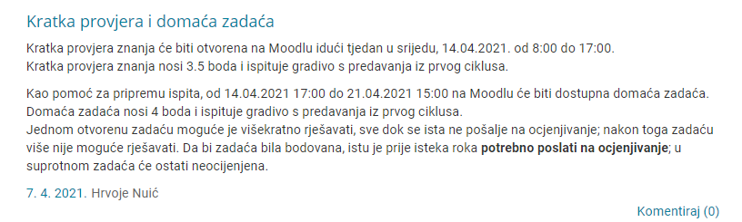

buyer https://www.fer.unizg.hr/predmet/irg_a/obavijesti?@=2tg8y#news_121089
Koji je “najlakši” za skontat library za linearnu algebru (ovaj 1, labos)?
Umarell P.S. moramo li za prvi labos koristit cpp, a za drugi python jer mi se čini da je lakše oba s pythonom napravit
Umarell Ako biraš python kao što kažeš u sljedećem komentaru onda si uzmi numpy, u njemu se sve stvari koje treba napraviti mogu praktički u jednoj liniji (od svih množenja vektora, inverza matrice, rješavanja sustava jednadžbi…)
numpy
Umarell ti biraš u čemu pišeš
JoKing Uzeo sam python i uhodao sam se u numpy, nego nisam znao može li se i prvi labos u pythonu. S numpyjem je stvarno jednostavan ovaj prvi labos.
Kakva je situacija s ovih 10 % bodovanja sudjelovanja u nastavi na predmetu? Na koji način to funkcionira, blicevi ili samo digneš ruku? I ako su blicevi, hoće ih najavljivati isključivo na predavanjima ili će postojati obavijesti za to? Hvala
kjkszpj jel se bodovalo sta uopce zasad?
ferball A ne znam, zato i pitam, bilo bi kulturno od njih kad bi najavili 😃
kjkszpj Koliko sam skuzio, na prvom predavanju su rekli da ce biti 2 provjere na moodleu koje ce nositi bodove za to sudjelovanje u nastavi
Kako se pripremit za KPZ i za meduispit. Iz cega je najbolje zadatke rjesavati?
Sicsile kakav KPZ?
caneb 
U slučaju da netko ne zna, u ZI ulazi cjelokupno gradivo s naglaskom na drugi ciklus. Prof. Željka potvrdila.
Gdje slati mail ako mi ne odgovaraju na irg@fer.hr